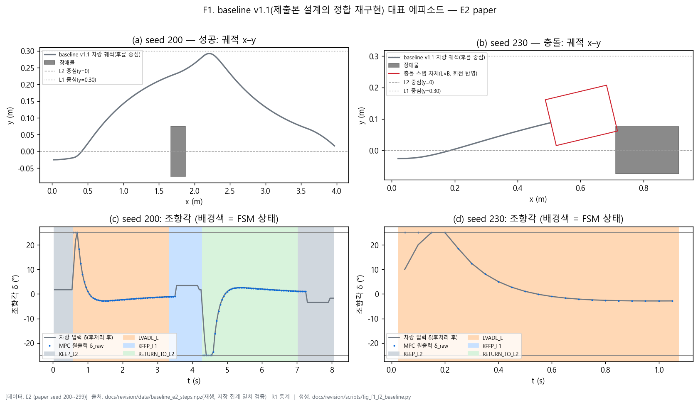
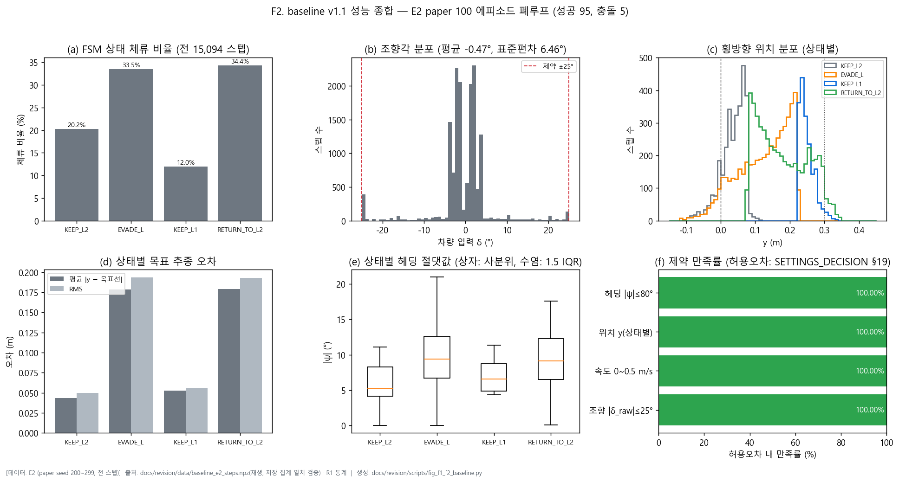
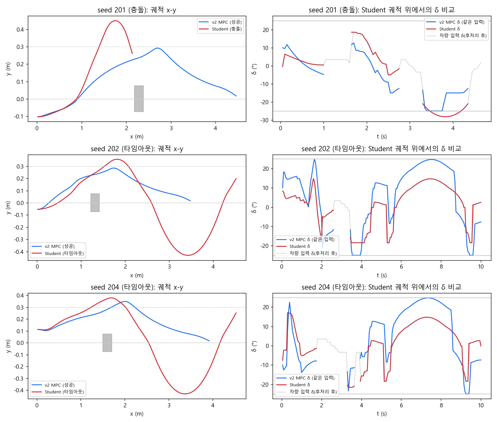
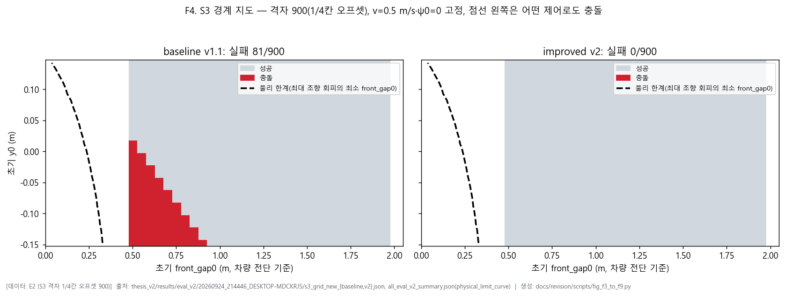
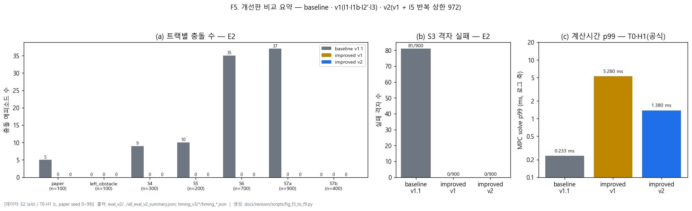
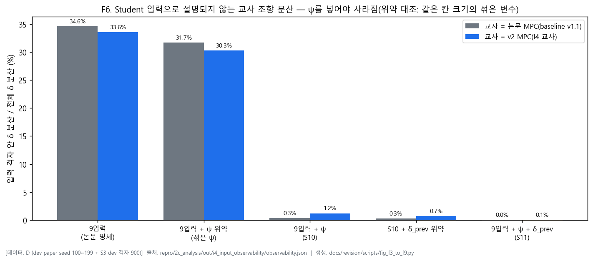
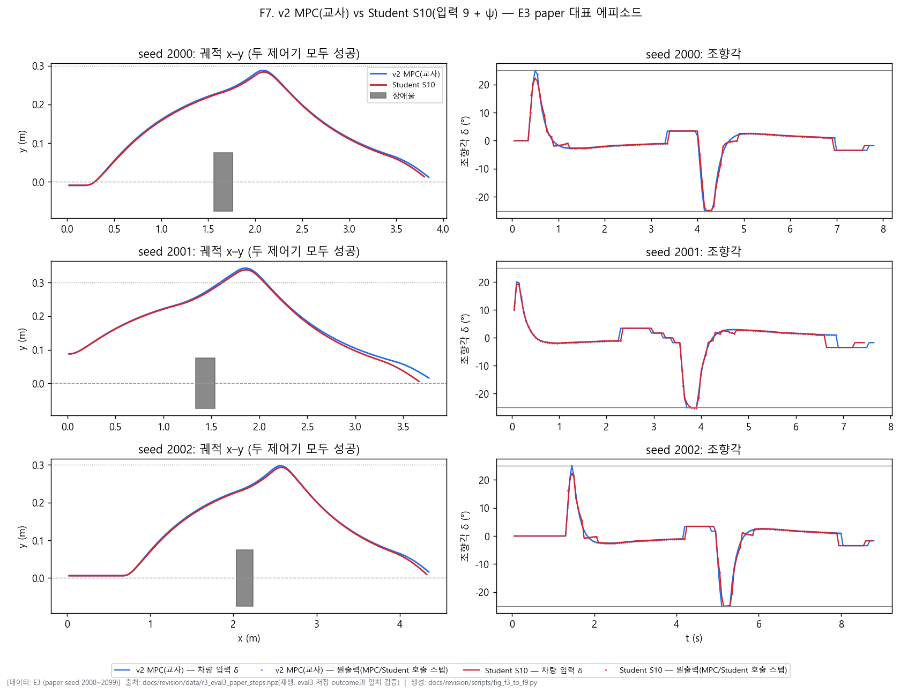
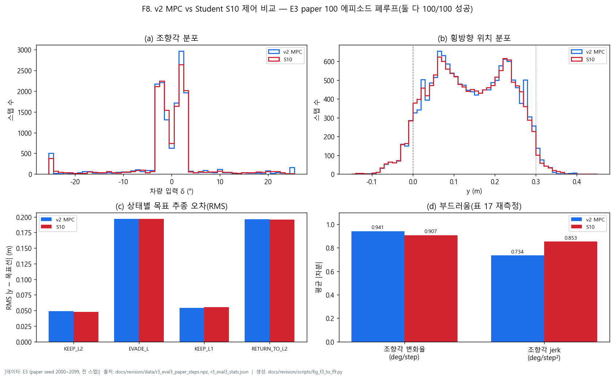
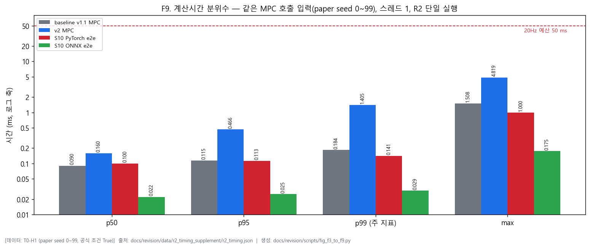

기술보고서 · 2026.09 · 학위 심사 제출본 아님
이원회
2025년 12월 제출 졸업논문 「MPC 기반 모방학습을 이용한 자율주행 차선변경 시스템」(중앙대학교 전자전기공학부)을 명세로 삼아 재구현·검증한 기술보고서이다. 제출본은 수정하지 않았으며, 이 문서의 모든 결과 수치는 새로 측정한 값이다.
목차
이 문서는 2025년 12월 제출 졸업논문 「MPC 기반 모방학습을 이용한 자율주행 차선변경 시스템」을 명세로 삼아 제어기를 재구현하고 검증한 기술보고서이다. 학위 심사 제출본이 아니며, 제출본 자체는 수정하지 않고 그대로 보존한다.
어떻게 만들었나. 제출본을 요구사항 명세로 읽어 57개의 요구사항 ID로 나누고, 제어기와 시뮬레이터를 처음부터 다시 구현하였다(기존 코드는 비교용으로만 읽음). 측정 기준·seed·판정 규칙은 실행 전에 고정했고, 개발용 데이터와 평가용 데이터를 나눠 평가 데이터로는 아무것도 조정하지 않았다. 이 문서의 모든 결과 수치는 새로 측정한 값이며, 제출본 수치는 "제출본" 열이나 문장에서 비교용으로만 인용한다.
재현 과정에서 확인된 사실. 제출본에는 서술이 모호하거나 빠진 곳이 있었고, 이는 결정표에 근거한 최소 가정으로 채웠다. 또한 서로 호환되지 않거나 원리적으로 불가능한 설정이 3건 확인되어 고쳤다([개정]). 세 건 모두 같은 기준 — 계산·분석으로 불가능이 증명된 명세만 수정 — 을 따랐다.
이 밖에 근거 파일을 찾지 못한 수치(계산 시간, 학습 표본 수)와 정의가 맞지 않는 표가 있어, 새 측정값으로 대체하고 부록 A에 사실을 기록하였다.
제출본이 한계로 남긴 검증. 제출본은 "Student 정책의 실제 주행 성능이 검증되지 않았다"를 첫째 한계로 적었다. 이 보고서는 그중 시뮬레이션 폐루프 검증을 수행하였다. 제출본 입력 그대로의 Student는 실패했고(paper 성공 7/100 (95% CI 3.4~13.7%)), 헤딩을 입력에 더한 Student는 한 번도 쓰지 않은 평가 데이터에서 에피소드별 성공·충돌·타임아웃 결과가 교사 MPC와 모두 같았다(시뮬레이션)(paper 성공 100/100 (95% CI 96.3~100.0%), 충돌 0/100 (95% CI 0.0~3.7%)).
읽는 방법. 장 구성은 제출본을 따르고, 제출본에 없던 강건성 검증(VI장 5절), 개선판(VI장 6절), Student 폐루프 검증(VI장 7절)을 더하였다. 모든 표·그림 캡션에는 [데이터 | 호스트 | 버전 | 커밋] 조건 태그가 있으며 코드 정의는 부록 B에, 제출본의 모든 수치와 이 보고서 값의 대응은 부록 A에 있다. 본문의 수치는 docs/revision/REVISION_NUMBERS.csv의 행에서 자동으로 채워지고, 조립 도구가 본문 수치와 표의 일치를 검사한다(부록 C).
자율주행의 차선변경은 장애물 회피·추월·경로 계획에 필수적이며, 주변 인식·실시간 의사결정·정밀한 경로 추종을 함께 요구한다. 모델 예측 제어(MPC)는 차량 모델로 미래 상태를 예측하고 제약조건을 명시적으로 고려해 최적 제어 입력을 계산하므로 널리 쓰이지만[1][2], 매 제어 주기마다 최적화 문제를 풀어야 해 계산 부담이 크다. 모방학습, 특히 Behavioral Cloning은 MPC 같은 전문가 정책의 상태–행동을 신경망으로 학습해 계산 시간을 줄이는 방법으로 주목받고 있다. 다만 모방학습의 성능은 학습 데이터의 품질에 좌우되며, 전문가 정책이 제약을 만족하는 명령을 내야 학습된 정책도 실행 가능한 명령을 낼 가능성이 높다. 제출본은 이 배경에서 MPC를 교사로 삼는 모방학습 차선변경 시스템을 설계하였다 (이 절의 서술은 제출본 I장 1절과 같다).
이 보고서는 제출본을 요구사항 명세로 삼아 시스템을 다시 구현하고, 제출본의 주장이 실제로 성립하는지 고정된 기준으로 검증한다. 검증 대상 주장은 세 가지이며 우선순위가 다르다.
범위는 다음과 같다.
이 장은 제출본 II장을 요약해 유지한다. 인용 문헌은 제출본 참고문헌을 그대로 옮겼다.
차선변경은 인식·경로 계획·제어가 통합적으로 요구되는 과제이다[1]. 의사결정 방법은 명시적 조건과 안전 거리 기준을 쓰는 규칙 기반 접근과, 강화학습·모방학습으로 정책을 배우는 학습 기반 접근으로 나뉜다. 규칙 기반 방법은 해석과 안전성 검증이 쉽지만 상황이 복잡해지면 규칙이 폭발적으로 늘어난다. 유한상태기계는 차선변경 같은 순차적 행동을 상태와 전이 조건으로 구조화해 동작 흐름을 검증하기 쉽게 한다. 이 보고서도 정상 주행·회피·복귀·비상 정지를 FSM 상태로 정의한다.
MPC는 예측 구간 동안의 시스템 동작을 예측하고 비용함수를 최소화하면서 제약을 만족하는 입력 시퀀스를 찾은 뒤, 첫 입력만 적용하고 다음 주기에 다시 푸는(receding horizon) 방식이다. 조향각·차선 범위 같은 제약을 명시적으로 다룰 수 있어 차량 제어에 널리 쓰이며[2], Kim 등[3]은 조향 액추에이터 동역학을 반영한 MPC 기반 경로 추종 제어를 제안하고 조향 명령 궤적을 이차계획(QP)으로 계산하였다(출판사 초록 기준). 이 보고서는 제출본과 같이 횡방향 오차와 헤딩만을 상태로 쓰는 2-상태 MPC를 사용한다. 제출본은 이 문헌이 횡방향 제어(MPC)와 종방향 제어(규칙 기반)를 분리한 계층 구조를 제안했다고 서술했으나, 초록에서는 그 내용을 확인하지 못해 옮기지 않았다(부록 A).
Behavioral Cloning은 전문가의 상태–행동을 지도학습으로 배우는 가장 기본적인 모방학습이다[4][5]. 학습된 정책은 작은 오차가 누적되어 전문가가 방문하지 않은 상태에 도달할 수 있고(분포 불일치), 이를 완화하기 위해 DAgger 같은 반복 학습이 제안되었다[6]. 이 보고서의 VI장 4절은 이 분포 불일치가 실제로 일어남을 확인했으며, 그보다 먼저 입력에 교사가 의존하는 상태(헤딩)가 빠져 있으면 입력만으로 교사 조향을 정확히 결정할 수 없어, 분포와 무관하게 없앨 수 없는 오차가 남는다는 점을 보였다(VI장 7절).
시스템은 제출본과 같이 환경 모델, 의사결정(유한상태기계, FSM), 제어(횡방향·종방향), 정책 모듈로 구성된다. 제어 주기는 20Hz / 0.05s이다.
재구현에서 제출본 구조에 더한 원칙은 하나이다. 제어기(FSM·MPC·속도 제어)는 센서 모델의 출력(front_gap, left_clear, right_clear, ey_line)과 차량 자기 상태(y, ψ, v)만 입력으로 받고, 시뮬레이터 내부의 장애물 좌표를 직접 읽지 않는다. 제출본은 이 경계를 서술하지 않았지만, 실제 차량에서 제어기가 받을 수 있는 정보만 쓰도록 강제해야 시뮬레이션 결과가 실차 구조와 대응하기 때문이다.
도로는 2차선 직선로이며 차선 폭은 0.30 m, 2차선(L2) 중심은 y=0 m, 1차선(L1) 중심은 y=0.30 m이다(RC카 차폭 0.15 m 기준). 차량은 L2에서 출발하고, 전방의 정지 장애물을 L1으로 회피한 뒤 L2로 돌아온다. 장애물 위치는 U(0.5, 2.0) m, 초기 속도는 U(0.3, 0.5) m/s의 균등분포이다.
재현 과정에서 제출본에 명시되지 않은 항목을 다음과 같이 정하였다(모두 SETTINGS_DECISION.md의 결정표에 근거).
SETTINGS_DECISION.md §12).표 1. 차량 파라미터(제출본과 동일). [데이터: 설정값 | 호스트: 해당 없음 | 버전: baseline v1.1 | 커밋: C2]
| 파라미터 | 값 | 비고 |
|---|---|---|
| 축간거리 L | 0.20 m | 고정 파라미터 |
| 차폭 B | 0.15 m | 고정 파라미터 |
| 최대 조향각 | ±25 deg | 고정 파라미터 |
| 속도 범위 | 0.0~0.5 m/s | 고정 파라미터 |
| 최대 조향각 변화율 | 200 deg/s | 고정 파라미터 — 제어 주기당 200 deg/s × 0.05 s = 10 deg/step |
차량 동역학은 제출본 식 (1)~(3)의 kinematic bicycle model을 Euler 적분으로 푼다(x, y는 후륜 중심). 속도는 동역학 없이 다음 스텝에 명령값이 바로 대입된다(제출본에 속도 동역학 서술이 없어 최소 가정).
SETTINGS_DECISION.md §9), 세 센서가 모두 선을 보지 못하면 "라인 미검출"로 처리한다.제출본에는 충돌 판정 기준이 없다. 이 보고서는 차체와 장애물을 회전 사각형으로 보고 겹침(분리축 정리)으로 판정하며, 매 스텝 차량 상태를 갱신한 직후, FSM을 갱신하기 전에 검사한다. VI장의 충돌 수치는 모두 이 기준이다.
제출본의 구조(SimulatedEnvironment, StateMachine, OSQPMPC, HierarchicalController, StudentPolicy)를 기능 단위로 따르되, 코드는 제출본 서술을 요구사항 명세로 삼아 처음부터 다시 작성하였다. 기존 코드는 비교용으로만 읽었고 복사하지 않았다.
repro/docs/SPEC.md), 각 항목을 정합·해석· 공백·개정으로 분류하였다.repro/docs/MEASURE_PLAN.md).thesis_v2/baseline/(제출본 설계의 정합 재구현, 개선 단계 동안 동결), thesis_v2/improved/(VI장 6절의 개선판), thesis_v2/improved/student_i4/(VI장 4절·7절의 Student).FSM은 제출본과 같은 5개 상태(KEEP_L2, EVADE_L, KEEP_L1, RETURN_TO_L2, SAFE_STOP)를 쓴다. 상태 전이 조건은 표 2와 같고, 한 곳만 제출본과 다르다.
표 2. 상태 전이 조건(제출본 대비). [데이터: 설정값 | 호스트: 해당 없음 | 버전: baseline v1.1 | 커밋: C2]
| 현재 → 다음 | 제출본 조건 | 이 보고서의 조건 | 태그 | ||||
|---|---|---|---|---|---|---|---|
| KEEP_L2 → EVADE_L | front_gap < 1.2 m AND left_clear | front_gap < 1.2 m AND left_clear | [정합] | ||||
| 모든 상태 → SAFE_STOP | front_gap < 0.20 m AND left_clear=False | front_gap < 0.20 m AND left_clear=False | [정합] | ||||
| EVADE_L → KEEP_L1 | y−0.30 | ≤ 0.08 m | y−0.30 | ≤ 0.08 m | [정합] | ||
| KEEP_L1 → RETURN_TO_L2 | t > 0.6 s | t > 0.6 s 그리고 right_clear | [해석] | ||||
| RETURN_TO_L2 → KEEP_L2 | |y| ≤ 0.20 m, |ψ| ≤ 20° | |y| ≤ 0.08 m, |ψ| ≤ 20° | [개정] |
[개정] RETURN_TO_L2 → KEEP_L2의 위치 임계값. 제출본의 두 확정값이 서로 호환되지 않음이 실행 전 계산으로 확인되었다. 복귀 완료 조건은 |y| ≤ 0.20 m인데, 전이 직후 적용되는 KEEP_L2 위치 제약은 |y| ≤ 0.15 m이다(IV장 2절). 임계값 가까이에서 전이하면 한 스텝 안에 0.05 m를 움직여야 하지만, 한 스텝의 최대 이동량은 0.0086~0.0125 m이다. 따라서 0.15 < |y| ≤ 0.20 m에서 전이하고 곧바로 MPC가 호출되면 그 스텝의 QP는 구조적으로 풀 수 없고(infeasible), 그 스텝의 조향은 "MPC가 계산한 제약 만족 조향각"이 아니게 된다. EVADE_L → KEEP_L1 조건과 대칭이 되도록 임계값을 0.08 m로 바꿨고, 헤딩 조건은 이 충돌과 무관해 그대로 두었다.
제출본에 없는 동작은 다음과 같이 최소 가정으로 채웠다.
SETTINGS_DECISION.md §14).조향 변화율 제한은 200 deg/s × 0.05 s = 10 deg/step이며, 뒤의 후처리 단계에서 적용한다(본 장 4절).
MPC는 제출본 식 (4)~(5)의 2-상태(y, ψ) 선형 모델과 식 (6)의 비용함수를 그대로 쓴다. 가중치와 예측 구간은 표 3과 같으며 모두 고정 파라미터이다.
표 3. MPC 비용함수 가중치(제출본과 동일). [데이터: 설정값 | 호스트: 해당 없음 | 버전: baseline v1.1 | 커밋: C2]
| 파라미터 | 값 | 의미 |
|---|---|---|
| q_y | 100.0 | 횡방향 오차 |
| q_ψ | 25.0 | 헤딩 |
| r_δ | 2.0 | 첫 조향 입력의 크기 |
| r_Δδ | 5.0 | 연속 조향 입력의 차분 |
| N | 15 (0.75 s) | 예측 구간(0.05 s 간격) |
식 (6)의 두 입력 항은 대상이 다르다. r_δ는 첫 입력 δ₀의 크기에만, r_Δδ는 연속한 입력의 차분 (δᵢ − δᵢ₋₁)에 곱해진다. 차분 항은 대각 행렬만으로는 표현되지 않으므로, 이 보고서의 MPC는 이를 비대각 항을 가진 Hessian으로 구현하였다.
제출본 결과를 만든 코드와의 차이(재현 과정에서 확인된 사실). 제출본의 수치를 만든 것으로 보이는 옛 MPC 코드(legacy_2025/final_hierarchical_backup_thesis_1204.py)를 같은 입력으로 비교한 결과, 식 (6)과 다르게 동작하는 부분이 두 곳 확인되었다.
이 보고서의 MPC는 식 (6)을 표준 QP 형태로 새로 구현해 두 차이가 없다. 옛 코드와의 조향 차이는 격자 비교에서 이 두 차이와 상태별 위치 제약 차이로 대부분 설명되었다(repro/docs/SPEC_VS_OLDCODE.md). 다만 target_y = 0 근방의 잔여 격자는 옛 코드의 r_Δδ를 차분형으로 바꿔도 30/37건 잔존(잔차 1.0~6.0°) 남아, 차이를 완전히 분리하지는 못하였다(repro/docs/THESIS_REVISION_LOG.md 2026-09-23 추가 검증). 제출본 VI장의 Student 오차(표 15)가 어느 구현을 교사로 삼았는지는 확인하지 못하였다(부록 A).
조향각 −25° ≤ δ ≤ 25°, 헤딩각 −80° ≤ ψ ≤ 80°, 횡방향 위치는 상태별로 L2 주행 −0.15 ≤ y ≤ 0.15, L1 주행 0.15 ≤ y ≤ 0.45, 차선 변경 구간 −0.15 ≤ y ≤ 0.45이다(제출본과 동일).
QP는 OSQP로 풀고 warm-start를 쓴다. 제출본은 솔버 설정(수렴 허용오차, 반복 상한, polishing, 예외 처리)을 서술하지 않아, 라이브러리 버전이 바뀌어도 동작이 같도록 이 설정들(허용오차·반복 상한·polishing·warm-start·예외 처리)을 코드에 고정하였다(SETTINGS_DECISION.md §18). "제약 만족" 판정의 허용오차는 이 솔버의 실제 수렴 기준(절대·상대 허용오차의 결합)에서 도출하였다(§19).
풀이에 실패하면 제출본 식 (7)의 비례 제어 δ = −K_p(y − y_ref)로 대체하며, K_p = 1.0의 단위는 rad/m로 해석하였다(도 단위로 읽으면 교정량이 사실상 0이 됨, §11). baseline에서 fallback이 쓰인 경우는 VI장 3절에 보고한다.
속도는 FSM 상태로만 결정한다. SAFE_STOP이 아닌 모든 상태에서 v_ref = 0.5 m/s, SAFE_STOP에서 0이다. front_gap은 속도를 직접 바꾸지 않고, G_TRIG = 1.2 m(회피 시작)와 G_SAFE_MIN = 0.20 m(비상 정지)을 통해 FSM 전이로만 영향을 준다. MPC는 속도를 결정하지 않는다(이 보고서의 핵심 전제 2).
표 4-1. 상태별 횡방향 제어 모드. [데이터: 설정값 | 호스트: 해당 없음 | 버전: baseline v1.1 | 커밋: C2]
| 상태 | 라인 감지 | 라인 미감지 |
|---|---|---|
| KEEP_L2 | 라인추종 δ = −K_ey·ey_line | MPC |
| KEEP_L1 | 라인추종 | MPC |
| EVADE_L | MPC | MPC |
| RETURN_TO_L2 | MPC | MPC |
| SAFE_STOP | 직전 조향 유지 | 직전 조향 유지 |
제출본은 KEEP_L2의 라인추종과 EVADE_L·RETURN_TO_L2의 MPC만 서술한다. KEEP_L1과 라인 미검출은 KEEP_L2와 대칭으로, SAFE_STOP은 "조향 유지"로 채웠다. 라인추종 게인 K_ey = 1.5의 단위는 rad/m이다(§17).
최종 조향 명령은 변화율 제한(200 deg/s × 0.05 s = 10 deg/step) → ±25° 절단 순서로 후처리한 값이다. 따라서 MPC 원출력이 제약 안에 있는지와 차량에 실제로 들어간 명령이 제약 안에 있는지를 따로 기록한다. VI장에서 "원출력"은 후처리 전, "차량 입력"은 후처리 후의 값이다.
이 장은 Student(신경망 정책)의 데이터·구조·학습 설정을 정리한다. 결과는 VI장 4절(제출본 입력 그대로의 Student)과 VI장 7절(입력을 정정한 Student)에 있다.
제출본은 "FSM + MPC 시스템"을 교사로 100개 에피소드에서 19,129개 샘플을 모았다고 서술한다. 재현 과정에서 이 샘플 수를 만든 실행 기록은 저장소에서 찾지 못했고, 가장 가까운 저장 데이터와도 개수가 달랐다(부록 A). 그래서 이 보고서는 데이터를 새로 만들었다.
표 5-1. 학습 데이터(제출본 대비). [데이터: D | 호스트: H1 | 버전: 교사 v2 MPC | 커밋: C5]
| 항목 | 제출본 | 이 보고서 |
|---|---|---|
| 에피소드 수 | 100 | 1,000 (dev paper 100 + S3 dev 900) |
| 에피소드당 평균 표본 | 191 | 115.1 (MPC 호출 스텝 기준) |
| 총 표본 수 | 19,129 | 115,076 |
| KEEP_L2 / EVADE_L / KEEP_L1 / RETURN_TO_L2 | (표 10 참고) | 8,176 / 46,001 / 4,453 / 56,446 |
KEEP_L1 표본이 적은 것은 이 상태에서 라인이 보이면 라인추종을 쓰기 때문이다(라인을 놓친 짧은 구간에서만 MPC가 호출됨). 개발 seed를 늘려 재생성해 보았지만 모든 상태가 같은 비율로 늘어 이 비율은 바뀌지 않았고(구조적 원인), Student가 실제로 쓰이는 분포와 같으므로 사전에 정한 범위를 그대로 썼다.
표 4. Student 신경망 구조(제출본 대비). [데이터: 설정값 | 호스트: 해당 없음 | 버전: Student 9입력 · S10 | 커밋: C5]
| 항목 | 제출본 | 이 보고서 |
|---|---|---|
| 입력 차원 | 9 | 10(S10), 9(비교용 9입력) |
| 은닉층 | 256-256-128 | 256-256-128 |
| 정규화 | BatchNorm + Dropout 0.15 (×3) | BatchNorm + Dropout 0.15 (×3) |
| 출력 | 2 (δ, v_target) | 2 (δ, v_target) |
| 학습 파라미터 수 | 약 135,000 | 102,786 (9입력) / 103,042 (10입력, S10) |
은닉층·정규화·출력은 제출본 표 4와 같고, 입력 차원만 다르다. 학습 파라미터 수는 모델 파일에서 직접 센 값이다. 제출본 본문의 "약 135,000개"는 표 4 구조로 계산한 값과 맞지 않으며 이를 만드는 계산을 찾지 못하였다(부록 A).
표 5. 학습 설정(제출본 대비). [데이터: 설정값 | 호스트: H1 | 버전: Student 9입력 · S10 · S11 | 커밋: C5]
| 항목 | 제출본 | 이 보고서 | 태그 |
|---|---|---|---|
| Optimizer | Adam | Adam | [정합] |
| Learning rate | 1e-3 | 1e-3 | [정합] |
| Batch size | 256 | 256 | [정합] |
| Epochs | 50 | 50 전부 실행, 검증 손실 최저 epoch의 가중치 채택 | [해석] |
| Train/Val | 85/15 | 85/15, 에피소드 단위 계층 분할 | [정합]+[공백] |
| 손실 | MSE (정규화 공간, δ·v_target) | MSE (정규화 공간, δ·v_target), 가중 없음 | [정합] |
| 입력 노이즈 증강 | N(0, 0.01²) | 미적용 | 미적용 |
| 상태별 밸런싱 | 적용 | 미적용 | 미적용 |
표 6-0. 평가 대상. [데이터: 해당 없음 | 호스트: 해당 없음 | 버전: 표 안 | 커밋: C2 · C5]
| 이름 | 무엇인가 | 절 |
|---|---|---|
| baseline v1.1 | 제출본 설계를 요구사항대로 옮긴 제어기([개정] 반영). 제출본의 "Teacher 정책"에 해당 | VI.2·VI.3·VI.5 |
| improved v1 | baseline에 개선 I1·I1b·I2'·I3을 더한 MPC | VI.5·VI.6 |
| improved v2 | v1에 반복 상한 I5를 더한 MPC — 개선 단계의 최종 MPC이자 Student의 교사 | VI.5~VI.7 |
| Student 9입력 | 제출본 입력 정의 그대로 학습한 신경망 | VI.4 |
| Student S10 / S11 | 입력에 ψ(S10), ψ와 δ_prev(S11)를 더한 신경망 | VI.7 |
SETTINGS_DECISION.md §19).k/n (95% CI)로, 제출본 값은 "제출본" 열에만 적는다.제출본 VI장 2절의 "Teacher 정책"에 해당하는 것은 제출본 설계를 옮긴 baseline v1.1이다. 이 절의 수치는 모두 E2 paper 100 에피소드(15,094 스텝)의 폐루프 결과이다.
baseline v1.1은 95/100 (95% CI 88.8~97.8%)로 회피·복귀를 마쳤고, 충돌은 5/100 (95% CI 2.2~11.2%)였다. 제출본 코드에는 기하학적 충돌 판정이 없어 제출본의 "충돌 0회"가 충돌이 실제로 없었다는 뜻인지 판정하지 않았다는 뜻인지 구분되지 않는다. 이 보고서의 판정(III장 2절)에서는 충돌이 확인되었다. E1의 충돌 사례 한 건을 분석한 결과 원인은 제어기 설계였다 — 비용함수(식 6)에 장애물 정보가 없어, 헤딩이 커지면 목표선 추종을 우선해 조향을 되돌리다 장애물과 겹쳤고, 같은 초기 조건에서도 최대 조향으로 회피하는 궤적은 존재하였다(실제 동역학으로 재계산, repro/2c_analysis/avoidance_feasibility_recheck.py). E2의 충돌도 같은 기전으로 보이지만(추정, 개별 분석하지 않음), 장애물 인지 하한(I2')을 포함한 개선판에서 충돌이 관측되지 않은 것과 부합한다(VI장 6절).
표 6. FSM 상태별 제어 성능. [데이터: E2 (paper, 전 스텝) | 호스트: H1(재생) | 버전: baseline v1.1 | 커밋: C2 평가 · C7 재생]
| 상태 | 제출본: 횡방향 오차 m | 이 보고서: |y| m | 제출본: |ψ| ° | 이 보고서: |ψ| ° | 제출본: δ ° | 이 보고서: δ ° | 제출본: 체류 % | 이 보고서: 체류 % |
|---|---|---|---|---|---|---|---|---|
| KEEP_L2 | 0.035 ± 0.028 | 0.044 ± 0.024 | 27.3 ± 22.1 | 5.7 ± 3.1 | −0.82 ± 3.45 | −1.49 ± 2.35 | 56.3 | 20.2 |
| EVADE_L | 0.110 ± 0.065 | 0.126 ± 0.067 | 29.5 ± 18.4 | 9.8 ± 3.8 | 5.23 ± 7.12 | 0.83 ± 6.61 | 2.1 | 33.5 |
| KEEP_L1 | 0.289 ± 0.041 | 0.248 ± 0.021 | 35.4 ± 14.2 | 7.0 ± 2.2 | −1.45 ± 4.89 | 1.99 ± 1.98 | 6.6 | 12.0 |
| RETURN_TO_L2 | 0.255 ± 0.096 | 0.179 ± 0.071 | 15.8 ± 12.7 | 9.3 ± 3.5 | −8.91 ± 6.34 | −2.00 ± 8.22 | 35.0 | 34.4 |
표 7. 종방향 제어 성능. [데이터: E2 (paper) | 호스트: H1(재생) | 버전: baseline v1.1 | 커밋: C2 평가 · C7 재생]
| 지표 | 제출본 | 이 보고서 |
|---|---|---|
| 평균 속도 | 0.458 ± 0.048 m/s | 0.499 ± 0.009 m/s |
| 최소 속도 | 0.301 m/s | 0.303 m/s |
| 최대 속도 | 0.500 m/s | 0.500 m/s |
| 최소 front_gap | 0.648 m | 0.000 m(최솟값 — 차량 전단이 장애물 옆을 지날 때 0, 충돌 아님) / EVADE_L 진입 시 1.080 ± 0.190 m(최소 0.512) |
| 충돌 | 0 | 5/100 (95% CI 2.2~11.2%) |
| 회피 성공 | 100.0% | 95/100 (95% CI 88.8~97.8%) |

docs/revision/data/baseline_e2_steps.npz(재생, 저장 집계 일치 검증) · R1 통계. 대표 에피소드 선택: seed 오름차순 첫 성공(seed 200) + 첫 충돌(seed 230). 대체 대상: 제출본 그림 1(Teacher 궤적 예시 부분). 생성: fig_f1_f2_baseline.py.표 8. baseline v1.1 MPC 계산 시간. [데이터: T0 (paper seed 0~99) | 호스트: H1(공식 조건) | 버전: baseline v1.1 | 커밋: C7]
| 통계량 | 제출본 (ms) | 이 보고서 (ms) |
|---|---|---|
| 평균 | 1.091 | 0.096 |
| 중앙값 | 1.035 | 0.090 |
| 표준편차 | 0.152 | 0.028 |
| 최소 | 0.823 | 0.081 |
| 최대 | 5.747 | 1.508 |
| 95 백분위 | 1.312 | 0.115 |
| 99 백분위 | 1.524 | 0.184 (주 지표) |
| 표본 수 | 3,000회 | 11,670회(seed 0~99 전 MPC 호출) |
제출본 VI장 3절은 교사가 만든 학습 데이터의 통계와 품질을 한 절에서 다뤘다. 이 보고서에서는 두 대상이 다르므로 나눠서 쓴다. (1)은 Student 학습 데이터(개발 데이터 D, 교사 improved v2), (2)~(4)는 제출본 설계의 MPC(baseline v1.1)가 E2에서 실제로 낸 제어 명령의 통계이다.
표 9. 학습 데이터셋 통계("평균 주행 시간" 행만 E2 baseline 데이터, 나머지 행은 학습 데이터 D). [데이터: D (표본) · E2 (평균 주행 시간 행) | 호스트: H1 | 버전: 교사 improved v2 · baseline v1.1 | 커밋: C5 · C7]
| 항목 | 제출본 | 이 보고서 |
|---|---|---|
| 총 에피소드 | 100 | 1,000 |
| 총 표본 | 19,129 | 115,076 |
| 에피소드당 평균 표본 | 191.3 | 115.1 |
| 에피소드당 최소 표본 | 142 | 91 |
| 에피소드당 최대 표본 | 267 | 150 |
| 평균 주행 시간 | 9.6 s | 7.55 s |
표 10. FSM 상태별 표본 분포. [데이터: D | 호스트: H1 | 버전: 교사 improved v2 | 커밋: C5]
| 상태 | 제출본 표본 | 제출본 % | 이 보고서 표본 | 이 보고서 % |
|---|---|---|---|---|
| KEEP_L2 | 10,770 | 56.3 | 8,176 | 7.1 |
| EVADE_L | 402 | 2.1 | 46,001 | 40.0 |
| KEEP_L1 | 1,263 | 6.6 | 4,453 | 3.9 |
| RETURN_TO_L2 | 6,694 | 35.0 | 56,446 | 49.1 |
| SAFE_STOP | 0 | 0.0 | 0 | 0.0 |
표본을 MPC 호출 스텝으로 한정했기 때문에 라인추종이 대부분인 KEEP_L2·KEEP_L1의 비중이 작고, 차선 변경 중인 EVADE_L·RETURN_TO_L2가 대부분이다. 폐루프 전체 스텝의 상태 체류 비율은 표 6에 있다.
표 11. baseline v1.1 제어 명령 통계. [데이터: E2 (paper, 전 스텝) | 호스트: H1(재생) | 버전: baseline v1.1 | 커밋: C2 평가 · C7 재생]
| 변수 | 통계 | 제출본 | 이 보고서 |
|---|---|---|---|
| 조향각 (°) | 평균 | −2.73 | −0.47 |
| 표준편차 | 6.79 | 6.46 | |
| 최소 | −12.44 | −25.00 | |
| 최대 | 24.99 | 25.00 | |
| 속도 (m/s) | 평균 | 0.458 | 0.499 |
| 표준편차 | 0.048 | 0.009 | |
| 최소 | 0.301 | 0.303 | |
| 최대 | 0.500 | 0.500 |
조향각은 차량에 들어간 명령(후처리 후)이다. 최소·최대가 ±25°인 것은 MPC가 조향 한계까지 쓰는 구간이 있다는 뜻이며, 제약 위반이 아니다(표 12). 제출본 표 11의 속도 통계는 규칙 기반 교사 속도와 맞지 않는다(표 7과 같은 사실, 부록 A).
표 12. 제약 만족률. [데이터: E2 (paper, 전 스텝) | 호스트: H1(재생) | 버전: baseline v1.1 | 커밋: C2 평가 · C7 재생]
| 제약 | 제출본 위반율 / 만족률 | 이 보고서 위반율 / 만족률 |
|---|---|---|
| 조향각 ±25° (MPC 원출력) | 0.00 / 100.00 | 0.00 / 100.00 (허용오차 §19 정정값; 정정 전 상수 기준 3/15094 스텝 초과) |
| 속도 | 범위 0~1.5 m/s: 0.00 / 100.00 | 범위 0~0.5 m/s: 0.00 / 100.00 |
| 횡방향 위치(상태별) | 0.2143% / 99.7857% | 0.0000% / 100.0000% |
| 헤딩각 ±80° | 0.00 / 100.00 | 0.00 / 100.00 |
표 13. 부드러움 지표(에피소드 안 차분). [데이터: E2 (paper, 전 스텝) | 호스트: H1(재생) | 버전: baseline v1.1 | 커밋: C2 평가 · C7 재생]
| 지표 | 통계 | 제출본 | 이 보고서 |
|---|---|---|---|
| 조향각 변화율 (°/step) | 평균 | 1.483 | 0.768 |
| 표준편차 | 1.827 | 1.996 | |
| 최소 / 최대 | 0.000 / 10.000 | 0.000 / 10.000 | |
| 속도 변화율 (m/s/step) | 평균 | 0.001 | 0.0007 |
| 표준편차 | 0.002 | 0.0090 | |
| 최소 / 최대 | 0.000 / 0.015 | 0.0000 / 0.1971 | |
| 충돌 | 0 | 5 (E2, baseline v1.1) |
조향각 변화율의 최대가 변화율 제한값과 같은 것은 후처리가 그 한계를 적용한 스텝이 있다는 뜻이다. 속도 변화율이 0이 아닌 것은 첫 스텝에서 초기 속도가 v_ref로 바뀌기 때문이다. 제출본의 속도 변화율은 이 표와 표 17에서 같은 정의인데 값이 달랐다(부록 A).
표 14. FSM 상태별 목표 추종 오차 |y − 목표선|. [데이터: E2 (paper, 전 스텝) | 호스트: H1(재생) | 버전: baseline v1.1 | 커밋: C2 평가 · C7 재생]
| 상태 | 목표 y (m) | 제출본 평균 / RMS (m) | 이 보고서 평균 / RMS (m) |
|---|---|---|---|
| KEEP_L2 | 0.00 | 0.029 / 0.037 | 0.044 / 0.050 |
| EVADE_L | 0.30 | 0.104 / 0.128 | 0.178 / 0.193 |
| KEEP_L1 | 0.30 | 0.026 / 0.032 | 0.052 / 0.056 |
| RETURN_TO_L2 | 0.00 | 0.245 / 0.263 | 0.179 / 0.193 |
EVADE_L·RETURN_TO_L2의 오차가 큰 것은 차선을 바꾸는 중이라 목표선에서 먼 구간이 대부분이기 때문이다. 유지 상태(KEEP_L2 / KEEP_L1)의 평균 오차는 0.044 / 0.052 m이다. 제출본 표 14의 EVADE_L 값은 목표선 대비 오차로는 나오기 어려운 크기여서 정의를 확인하지 못하였다(부록 A).

docs/revision/data/baseline_e2_steps.npz(재생, 저장 집계 일치 검증) · R1 통계. 대표 에피소드 선택: 선택 없음(전 에피소드·전 스텝). 대체 대상: 제출본 그림 2(MPC 성능 종합 분석). 생성: fig_f1_f2_baseline.py.그림 F2는 제출본 그림 2(MPC 성능 종합 분석)를 대신한다. 조향각은 평균·표준편차 −0.47° / 6.46°, 속도 분포는 0.499 m/s에 몰려 있고, KEEP_L2 체류는 20.2%이다.
이 절은 제출본의 입력 정의(9차원, V장 1절)를 그대로 따른 Student를 다룬다. 제출본 VII장은 "Student 정책의 실제 주행 성능이 검증되지 않았다"를 첫째 한계로, "closed-loop 시뮬레이션을 통한 검증"을 첫째 향후 연구로 적었다. 이 보고서는 그 검증을 시뮬레이션에서 수행했고(실차 주행은 하지 않음), 결과는 실패였다. 원인을 찾아 입력 정의를 고친 결과는 7절에 있다.
교사는 improved v2, 데이터는 V장의 개발 데이터 D, 구조·설정은 제출본 표 4·5이다. 검증 손실이 가장 낮은 epoch와 그 손실은 46 / 0.18159였다. E2 paper에서 v2가 주행한 궤적의 MPC 호출 스텝마다, 같은 입력으로 Student 출력과 v2 출력을 비교한 개루프 조향 오차는 다음과 같다.
표 6-4a. 9입력 Student 개루프 조향 오차(|Student δ − v2 δ|). [데이터: E2 (paper) | 호스트: H1 | 버전: Student 9입력 · 교사 v2 MPC | 커밋: C4]
| 상태 | KEEP_L2 | EVADE_L | KEEP_L1 | RETURN_TO_L2 | 전체 |
|---|---|---|---|---|---|
| MAE | 0.61° | 3.27° | 0.85° | 2.12° | 2.48° |
이 오차는 제출본이 보고한 개루프 지표와 같은 종류이다(교사·데이터가 달라 값은 직접 비교하지 않음). 개루프 기준으로는 교사를 가깝게 따르는 것처럼 보인다.
Student가 MPC가 호출될 스텝의 조향을 대신하고(라인추종·SAFE_STOP·속도·FSM·후처리는 그대로), 같은 평가 데이터를 주행하였다.
표 6-4b. 9입력 Student 폐루프 결과(같은 데이터에서 v2 MPC는 전부 성공·충돌 0). [데이터: E2 | 호스트: H1 | 버전: Student 9입력 | 커밋: C4]
| 시나리오 | 성공 | 충돌 | 타임아웃 |
|---|---|---|---|
| paper | 7/100 (95% CI 3.4~13.7%) | 23/100 (95% CI 15.8~32.2%) | 70/100 |
| S3 격자 | 60/900 (95% CI 5.2~8.5%) | 290/900 (95% CI 29.3~35.3%) | 550/900 |
개루프 오차가 작아도 폐루프에서는 회피·복귀를 거의 하지 못하였다. 실행 오류나 NaN 출력은 없었다.
같은 모델로 폐루프를 결정론적으로 다시 돌려(저장 결과와 에피소드별 일치 확인) Student가 조향한 모든 스텝에서 같은 입력의 v2 출력을 함께 기록하였다.
제출본 VI장 4절 (5)는 "compounding error, domain gap"을 실제 주행의 위험으로 적었다. 두 현상은 실제로 확인되었고(1·2), 여기에 더해 Student 입력에 헤딩이 없어 교사의 조향을 원리적으로 결정할 수 없다는 원인(3)이 확인되었다. 7절에서 이를 계산으로 증명하고 입력을 정정한다.

repro/2c_analysis/out/i4_closed_loop_failure/ (i4_closed_loop_failure_analysis.py, 저장 결과와 outcome 일치 재생). 대표 에피소드 선택: seed 오름차순 첫 충돌(201) + 첫·둘째 타임아웃(202, 204) — I4 분석 시 사전 고정. 대체 대상: 없음(신설, VI.4). 생성: (재사용) repro/2c_analysis/i4_closed_loop_failure_analysis.py.제출본은 단일 정지 장애물 시나리오만 다뤘다. 이 절은 제출본에 없는 조건에서 같은 제어기가 어떻게 동작하는지 확인한다. 모든 조건은 E2(부록 B)에서 baseline v1.1·improved v1·improved v2를 같은 seed로 실행한 결과이며, 개선판 설계는 VI장 6절에 있다.
표 6-5. 강건성 시나리오별 충돌. [데이터: E2 | 호스트: H1 | 버전: baseline v1.1 · improved v1 · improved v2 | 커밋: C2]
| 시나리오 | baseline v1.1 | improved v1 | improved v2 |
|---|---|---|---|
| paper | 5/100 (95% CI 2.2~11.2%) | 0/100 (95% CI 0.0~3.7%) | 0/100 (95% CI 0.0~3.7%) |
| left_obstacle | 0/100 (95% CI 0.0~3.7%) | 0/100 (95% CI 0.0~3.7%) | 0/100 (95% CI 0.0~3.7%) |
| S4 노이즈 | 9/300 (95% CI 1.6~5.6%) | 0/300 (95% CI 0.0~1.3%) | 0/300 (95% CI 0.0~1.3%) |
| S5 지연 | 10/200 (95% CI 2.7~9.0%) | 0/200 (95% CI 0.0~1.9%) | 0/200 (95% CI 0.0~1.9%) |
| S6 초기 헤딩 | 35/700 (95% CI 3.6~6.9%) | 0/700 (95% CI 0.0~0.5%) | 0/700 (95% CI 0.0~0.5%) |
| S7a 장애물 크기 | 37/900 (95% CI 3.0~5.6%) | 0/900 (95% CI 0.0~0.4%) | 0/900 (95% CI 0.0~0.4%) |
| S7b 전후 장애물 | 0/400 (95% CI 0.0~1.0%) | 0/400 (95% CI 0.0~1.0%) | 0/400 (95% CI 0.0~1.0%) |
S3 경계 지도. baseline은 81/900 (95% CI 7.3~11.0%)에서 실패했고, v1은 0/900 (95% CI 0.0~0.4%), v2는 0/900 (95% CI 0.0~0.4%)였다. 실패 경계를 물리 한계(조향을 최대로 써서 회피할 때 충돌하지 않는 최소 front_gap0)와 비교하면, baseline은 물리적으로 필요한 것보다 평균 0.407 m (0.267~0.574 m, 17열) 더 먼 거리가 있어야 회피에 성공한다. 즉 baseline의 실패는 물리적 불가능이 아니라 제어기 설계의 여유 손실이다. 개선판은 이 격자 범위에서 실패가 없어 관측 가능한 실패 경계 자체가 사라졌다.

thesis_v2/results/eval_v2/20260924_214446_DESKTOP-MDCKRJS/s3_grid_new_{baseline,v2}.json, all_eval_v2_summary.json(physical_limit_curve). 대표 에피소드 선택: 선택 없음(격자 전체). 대체 대상: 없음(신설, VI.5) — 기존 분석 그림(구 격자·3층PC104)을 E2로 다시 그림. 생성: fig_f3_to_f9.py.VI장 2절과 5절에서 확인된 baseline의 한계(장애물을 모르는 비용함수, 변화율 제한을 모르는 재계획, 풀이 실패 시 약한 fallback)를 제출본에 없는 개선으로 다뤘다. baseline 코드는 이 단계 동안 동결했고, 개선은 별도 코드(thesis_v2/improved/)에서 항목마다 켜고 끌 수 있게 만들었다. 파라미터는 해석적으로 정하거나 개발 데이터 D에서만 정했으며, 평가 데이터로는 아무것도 조정하지 않았다.
표 6-6. 개선 항목과 파라미터 근거. [데이터: 설정값 | 호스트: 해당 없음 | 버전: improved v1 · v2 | 커밋: C2]
| 항목 | 무엇을 바꾸나 | 파라미터 | 근거 |
|---|---|---|---|
| I1 변화율 인지 | MPC가 직전 조향을 입력받아 첫 입력에 변화율 하드 제약을 둠 | 10°/step | 후처리 제한과 같은 값 — MPC가 실제로 낼 수 없는 조향을 계획하지 않도록 |
| I1b 소프트 위치 제약 | 위치·헤딩 제약을 슬랙 변수와 ℓ1 벌점으로 완화(풀이 불가 대신 최소 위반) | ρ = 10,000 | 원 제약 문제의 라그랑주 승수 상한을 해석적으로 추정하고 안전계수를 둔 exact penalty 값 |
| I2' 장애물 인지 | front_gap이 가까울 때 y에 장애물 회피 하한을 두고, 그동안 헤딩 하한(−20°)을 함께 둠 | 마진 0.143 m | 헤딩을 20° 이내로 묶었을 때 회전한 차체 모서리의 최악 오프셋(해석 도출) |
| I3 warm-start fallback | 풀이 실패 시 비례 제어 대신 직전 해를 한 스텝 밀어 사용 | — | 직전 해는 실행 가능했던 계획이므로 비례 제어보다 교정력이 클 것으로 보고 채택(설계 근거) |
| I5 반복 상한 | OSQP 반복 수에 상한을 두고 상한에서 나온 근사해가 하드 제약을 어기면 폐기 | 972 | 시간 예산 후보(5 / 10 / 20 / 30 ms) 중 개발 데이터에서 안전성 비열화가 없는 가장 낮은 값 |
v1 = I1 + I1b + I2' + I3, v2 = v1 + I5이다. 각 항목을 단독·조합으로 개발 데이터에서 비교한 뒤(ablation, thesis_v2/results/dev_ablation/) 조합을 확정하였다. 평가 데이터에서는 baseline·v1·v2 세 조합만 비교했으며(그림 F5), 항목별 단독 효과는 평가 데이터에서 분리하지 않았다.
제약 만족(핵심 전제 1). I1b는 위치·헤딩 제약을 소프트화하므로, 개선판에서는 "MPC 원출력이 원래의 하드 제약을 지키는가"를 따로 센다.
표 6-7. E2 paper에서 개선판 MPC의 제약 관련 기록. [데이터: E2 (paper) | 호스트: H1 | 버전: improved v1 · v2 | 커밋: C2]
| 버전 | MPC 호출 / 반복 상한 도달 / 근사해 폐기(fallback) / 엄밀 기준 조향 위반 |
|---|---|
| improved v1 | 11,510 / 31 / 0 / 0 |
| improved v2 | 11,508 / 195 / 2 / 0 |
v2에서는 반복 상한에서 멈춘 근사해 가운데 하드 제약을 어기는 것은 쓰지 않고 fallback으로 넘겼으며(표의 폐기 수), 차량에 들어간 조향 중 허용오차를 넘은 것은 없었다. 개선판이 원래 위치 제약을 소폭 넘는 경우는 강건성 조건(초기 헤딩 오차, 지연)의 KEEP_L1 전이 직후에서 관찰되었으며 제어기 설계의 한계로 기록하였다(repro/docs/THESIS_REVISION_LOG.md).
표 6-8. 버전별 MPC 계산 시간과 반복 횟수. [데이터: T0 | 호스트: H1(공식 조건) | 버전: baseline v1.1 · improved v1 · improved v2 | 커밋: C3]
| 버전 | 시나리오 | solve p99 / 최대 (ms) | 반복 p50 / p99 / 최대 |
|---|---|---|---|
| baseline v1.1 | paper | 0.233 / 1.414 | 25 / 50 / 75 |
| left_obstacle | 0.224 / 0.349 | 25 / 50 / 50 | |
| S6 ψ0 = −15° | 0.243 / 0.944 | 25 / 50 / 650 | |
| improved v1 | paper | 5.280 / 31.708 | 25 / 3825 / 20000 |
| left_obstacle | 26.039 / 27.019 | 25 / 20000 / 20000 | |
| S6 ψ0 = −15° | 9.365 / 28.393 | 25 / 7324 / 20000 | |
| improved v2 | paper | 1.380 / 3.844 | 25 / 972 / 972 |
| left_obstacle | 1.436 / 1.526 | 25 / 972 / 972 | |
| S6 ψ0 = −15° | 1.394 / 3.530 | 25 / 972 / 972 |

eval_v2/.../all_eval_v2_summary.json, timing_v3/*/timing_*.json. 대표 에피소드 선택: 선택 없음(전 에피소드). 대체 대상: 없음(신설, VI.6). 생성: fig_f3_to_f9.py.제출본 MPC는 상태 x = [y, ψ]를 초기값으로 받아 최적 조향을 푼다(식 4~6). 그런데 Student 입력 9차원에는 헤딩 ψ가 없다.
표 6-7a. 입력 격자 안에서 설명되지 않는 교사 조향 분산. [데이터: D | 호스트: H1 | 버전: 교사 baseline v1.1 · v2 MPC | 커밋: C5]
| 입력 | 교사 = 제출본 설계 MPC(baseline) | 교사 = improved v2 |
|---|---|---|
| 9차원(제출본) | 34.6% (4.76°) | 33.6% (4.85°) |
| 9차원 + 섞은 ψ(위약) | 31.7% | 30.3% |
| 9차원 + ψ | 0.3% | 1.2% |
| 9차원 + ψ + δ_prev | 0.0% | 0.1% |

repro/2c_analysis/out/i4_input_observability/observability.json. 대표 에피소드 선택: 선택 없음(dev MPC 호출 스텝 전체). 대체 대상: 없음(신설, VI.7 — [개정] 근거). 생성: fig_f3_to_f9.py.분류. ψ 추가는 [개정]이다 — 제출본 자신의 MPC를 제출본 입력 명세로는 모방할 수 없음이 계산으로 증명되었고, 이는 초기 위치 절단·복귀 임계값과 같은 기준("계산·분석으로 불가능이 증명된 명세만 수정")이다. 직전 조향 δ_prev는 제출본 MPC의 비용함수에 항이 없어 제출본 설계에는 필요 없고, 교사 v2의 변화율 제약(I1)에서만 영향을 준다(δ_prev를 −20°~+20°로 바꾸면 v2의 첫 조향이 −10.0° / +0.0° / +10.0° / +20.0° / +21.0°). 그래서 δ_prev 추가는 [발전]으로 두었다.
입력만 다르고 데이터·분할·구조·설정은 모두 같게 두고 두 모델을 학습하였다: S10(9차원 + ψ, [개정]만), S11(S10 + δ_prev). 선택 epoch와 검증 손실은 S10 48 / 0.01597, S11 44 / 0.00365였다(9입력은 46 / 0.18159).
표 6-7b. 개발 데이터 비교. [데이터: D | 호스트: H1 | 버전: Student 9입력 · S10 · S11 | 커밋: C5]
| 모델 | 개루프 MAE(검증 분할) | 폐루프 paper 성공/충돌/타임아웃 | 폐루프 S3 성공/충돌/타임아웃 |
|---|---|---|---|
| 9입력 | 2.82° | 7/20/73 | 68/294/538 |
| S10 | 0.57° | 100/0/0 | 900/0/0 |
| S11 | 0.21° | 100/0/0 | 900/0/0 |
선택 규칙은 실행 전에 정하였다: S11이 폐루프 성공·충돌에서 S10보다 유의하게 나을 때만(McNemar 정확검정 p < 0.05) S11, 그 밖에는 입력이 적은 S10. 두 모델의 폐루프 결과가 에피소드마다 같아 S10을 골랐다. 개루프 MAE는 S11이 낮지만 선택에 쓰지 않는다고 미리 정하였다. S10은 9입력보다 개발 데이터에서 성공한 쌍이 압도적으로 많았다(S10만 성공 / 9입력만 성공 = 925/0).
개발 데이터는 학습 시나리오와 같은 집합이어서 낙관적일 수 있다. 한 번도 쓰지 않은 E3(부록 B)로 한 번만 확인하였다. 판정 기준도 실행 전에 정하였다 — 통과: v2 MPC 대비 충돌이 많지 않고 성공이 적지 않음(paper·S3 각각), 부분 개선: 통과는 못 했지만 9입력 대비 유의하게 나음, 그 밖은 실패.
표 6-7c. E3 폐루프 결과. [데이터: E3 | 호스트: H1 | 버전: v2 MPC · Student 9입력 · S10 · S11 | 커밋: C5 평가 · C6 판정]
| 제어기 | paper 성공 | paper 충돌 | paper 타임아웃 | S3 성공 | S3 충돌 | S3 타임아웃 |
|---|---|---|---|---|---|---|
| v2 MPC(교사) | 100/100 (95% CI 96.3~100.0%) | 0/100 (95% CI 0.0~3.7%) | 0 | 900/900 (95% CI 99.6~100.0%) | 0/900 (95% CI 0.0~0.4%) | 0 |
| Student 9입력 | 9/100 (95% CI 4.8~16.2%) | 24/100 (95% CI 16.7~33.2%) | 67 | 59/900 (95% CI 5.1~8.4%) | 295/900 (95% CI 29.8~35.9%) | 546 |
| Student S10 | 100/100 (95% CI 96.3~100.0%) | 0/100 (95% CI 0.0~3.7%) | 0 | 900/900 (95% CI 99.6~100.0%) | 0/900 (95% CI 0.0~0.4%) | 0 |
| Student S11(참고) | 100/100 (95% CI 96.3~100.0%) | 0/100 (95% CI 0.0~3.7%) | 0 | 900/900 (95% CI 99.6~100.0%) | 0/900 (95% CI 0.0~0.4%) | 0 |
표 15. Student 학습·평가 오차(제출본 대비). [데이터: D(학습·검증) · E3(평가) | 호스트: H1 | 버전: Student S10 | 커밋: C5 · C6]
| 데이터 | 제출본 MSE(정규화) | 제출본 MAE 조향 | 제출본 MAE 속도 | S10 MSE(정규화) | S10 MAE 조향 | S10 MAE 속도 |
|---|---|---|---|---|---|---|
| 학습 | 0.082 | 1.15 | 0.014 | 0.0244 (epoch 48) | — | ≈0 (MPC 호출 스텝의 v_target은 상수, 참고 지표) |
| 검증 | 0.095 | 1.24 | 0.016 | 0.01597 | 0.570 | ≈0 (MPC 호출 스텝의 v_target은 상수, 참고 지표) |
| 평가 | 0.091 | 1.20 | 0.015 | — | 0.512 (eval3) | ≈0 (MPC 호출 스텝의 v_target은 상수, 참고 지표) |
표 6-7d. 상태별 개루프 조향 오차(|Student δ − v2 δ|, 같은 입력). [데이터: E3 (paper) | 호스트: H1 | 버전: Student 9입력 · S10 · S11 | 커밋: C5 · C6]
| 모델 | KEEP_L2 | EVADE_L | KEEP_L1 | RETURN_TO_L2 | 전체 |
|---|---|---|---|---|---|
| 9입력 | 0.345° | 3.569° | 0.915° | 2.061° | 2.573° |
| S10 | 0.108° | 0.811° | 0.130° | 0.324° | 0.512° |
| S11 | 0.112° | 0.357° | 0.082° | 0.073° | 0.195° |

docs/revision/data/r3_eval3_paper_steps.npz(재생, eval3 저장 outcome과 일치 검증). 대표 에피소드 선택: eval3 seed 2000·2001·2002(처음 세 seed, 사전 고정). 대체 대상: 제출본 그림 1(Teacher–Student 궤적 비교 부분). 생성: fig_f3_to_f9.py.표 6-7e. 폐루프 원출력 ±25° 초과율 / 원출력 최대 / 분포 이탈률. [데이터: E3 | 호스트: H1(재생) | 버전: v2 MPC · Student 9입력 · S10 · S11 | 커밋: C5 평가 · C6 집계]
| 제어기 | paper | S3 |
|---|---|---|
| v2 MPC | 0.00% / 25.01° / 2.77% | 0.00% / 25.01° / 3.31% |
| Student 9입력 | 1.54% / 34.91° / 29.40% | 3.40% / 50.45° / 32.61% |
| Student S10 | 0.80% / 25.59° / 2.50% | 1.23% / 26.02° / 3.81% |
| Student S11 | 3.45% / 25.21° / 2.74% | 3.32% / 25.21° / 3.28% |
MPC의 원출력은 QP 제약 덕분에 허용오차 안에 있다. S10도 원출력이 ±25°를 넘는 경우가 남아 있으며(경계 근처의 소폭 초과), 차량 입력은 후처리가 범위 안으로 자른다. 신경망은 제약을 구조적으로 보장하지 못하고 후처리에 의존한다. ψ를 입력으로 받자 분포 이탈은 교사와 같은 크기로 줄었다(각 모델 자신의 입력 통계 기준 — 기준이 달라 교사와의 직접 비교는 참고용).
표 17. 제어 부드러움(에피소드 안 차분, 폐루프). [데이터: E3 (paper) | 호스트: H1(재생) | 버전: Teacher = v2 MPC · Student = S10 | 커밋: C5 평가 · C7 재생]
| 지표 | 제출본 Teacher | 제출본 Student | 제출본 개선율 | v2 MPC | S10 | 개선율 |
|---|---|---|---|---|---|---|
| 조향각 변화율 (°/step) | 1.483 | 1.484 | −0.1% | 0.941 | 0.907 | +3.6% |
| 속도 변화율 (m/s/step) | 0.004 | 0.004 | 0.0% | 0.0006 | 0.0006 | −0.9% |
| 조향각 jerk (°/step²) | 0.935 | 0.905 | +3.2% | 0.734 | 0.853 | −16.2% |
개선율은 (Teacher − Student)/Teacher이다. S10의 조향 변화율은 v2보다 약간 작고 조향 jerk는 크다(불리한 방향). 두 값 모두 한 번의 폐루프 실행에서 잰 평균이며 불확실성은 산출하지 않아, 차이의 유의성은 판단하지 않는다. 제출본은 학습 데이터에서 잰 개루프 값이고, 이 보고서는 각 제어기가 실제로 주행한 폐루프 값이다. 제출본 스크립트의 "jerk"는 실제로는 속도의 2차 차분이었다(부록 A).

docs/revision/data/r3_eval3_paper_steps.npz, r3_eval3_stats.json. 대표 에피소드 선택: 선택 없음(전 에피소드·전 스텝). 대체 대상: 제출본 그림 3(Teacher와 Student 제어 비교, 학습 데이터 기반) — 폐루프 기반으로 대체. 생성: fig_f3_to_f9.py.표 16·18. Student 추론 시간과 v2 MPC 대비(시간은 R2 한 번의 실행, 배수는 두 공식 실행의 범위). [데이터: T0 (paper seed 0~99) | 호스트: H1(공식 조건) | 버전: v2 MPC · Student S10 | 커밋: C7]
| 통계량 | 제출본 Teacher | 제출본 Student | v2 MPC | S10 PyTorch / ONNX | v2 ÷ S10 (PyTorch / ONNX) |
|---|---|---|---|---|---|
| 평균 | 1.091 | 0.206 | 0.213 | 0.102 / 0.022 | 2.1배 / 9.5~9.8배 |
| 중앙값 | 1.035 | 0.189 | 0.160 | 0.100 / 0.022 | 1.6배 / 7.2~7.3배 |
| 표준편차 | 0.152 | 0.055 | 0.212 | 0.019 / 0.004 | 8.8~11.0배 / 53.3~65.8배 |
| 최소 | 0.823 | 0.152 | 0.145 | 0.086 / 0.020 | 1.7배 / 7.3배 |
| 최대 | 5.747 | 1.557 | 4.819 | 1.000 / 0.175 | 4.8~5.9배 / 27.5~29.2배 |
| 95 백분위 | 1.312 | 0.287 | 0.466 | 0.113 / 0.025 | 4.1~4.2배 / 18.6~21.4배 |
| 99 백분위(주 지표) | 1.524 | 0.354 | 1.405 | 0.141 / 0.029 | 6.8~9.9배 / 47.8~51.7배 |

docs/revision/data/r2_timing_supplement/r2_timing.json. 대표 에피소드 선택: 선택 없음(전 MPC 호출). 대체 대상: 제출본 표 16·18의 그림 대응(제출본에 해당 그림 없음 — 신설). 생성: fig_f3_to_f9.py.제출본 설계의 MPC(baseline v1.1)는 E2에서 조향 100.00% · 속도 100.00% · 헤딩 100.00%, 횡방향 위치 100.00%의 제약 만족률을 보였다(허용오차: 솔버 수렴 기준). 이 보고서의 구현에서는 [개정] 두 건을 반영한 뒤 위치 제약 위반이 0 / 15,094이었다. 제출본이 보고한 위반(99.79% 만족)은 제출본 데이터의 생성 조건을 재현할 수 없어 원인을 확인하지 못했으며, 두 설정의 비호환은 원인 후보이다(VI장 3절). 초기 헤딩 오차가 있는 강건성 조건(S6)에서는 baseline의 위치 제약 위반 사례가 관찰되었다(repro/docs/RESULT_BASELINE.md 조건부 표기). 평균 계산 시간은 0.096 ms(baseline) / 0.213 ms(v2, p99 1.405)이다. 제출본 값(1.091 ms)은 측정 근거가 없어 비교하지 않는다(부록 A).
다만 "제약을 만족한다"와 "장애물을 피한다"는 다른 문제였다. 제출본 설계의 비용함수에는 장애물 정보가 없어 baseline은 E2 paper에서도 충돌이 있었고(VI장 2절), 초기 헤딩 오차·장애물 크기 변화 등 강건성 조건에서도 있었다(충돌률은 조건 간 신뢰구간이 겹침, VI장 5절). 장애물 인지 하한과 소프트 제약 등을 더한 개선판(v2)은 E2 전 조건에서 충돌이 관측되지 않았고(합산 96/2700 (95% CI 2.9~4.3%) → 0/2700 (95% CI 0.0~0.1%)), 반복 상한으로 계산 시간 꼬리도 제어하였다(VI장 6절).
제출본은 Student 조향 MAE(1.2°)가 교사 조향 표준편차(6.79°)의 18%에 불과하다는 개루프 지표로 "높은 정확도"를 결론지었다. 이 보고서의 S10은 같은 형식의 지표가 0.512°, 교사 표준편차 8.14°, 비율 6.3%이다. 그러나 이 보고서에서 더 중요한 결과는 다음이다.
횡방향(MPC 또는 Student)과 종방향(규칙 기반)을 분리한 구조는 유지하였다. Student도 MPC가 내던 조향만 대신하며, 상태 전이·속도·비상 정지는 규칙이 그대로 담당한다. 이 분리 덕분에 신경망을 넣어도 비상 정지(SAFE_STOP) 논리는 바뀌지 않는다. left_obstacle에서는 MPC 세 버전(baseline·v1·v2) 모두 비상 정지가 명세대로 동작하였다(VI장 5절). Student는 left_obstacle에서 평가하지 않았다. 제출본이 지적한 횡·종방향 결합을 고려하지 못하는 한계는 그대로 남는다.
2025년 12월 제출 졸업논문의 설계를 요구사항 명세로 삼아 제어기를 새로 구현하고, 실행 전에 고정한 기준으로 다시 검증하였다.
재현·검증 결과
한계
향후 연구
제출본 참고문헌을 그대로 옮겼다.
[1] Schwarting, W., Alonso-Mora, J., & Rus, D. (2018). Planning and decision-making for autonomous vehicles. Annual Review of Control, Robotics, and Autonomous Systems, 1, 187-210.
[2] Katriniok, A., Maschuw, J. P., Christen, F., Eckstein, L., & Abel, D. (2013). Optimal vehicle dynamics control for combined longitudinal and lateral autonomous vehicle guidance. European Control Conference (ECC), 974-979.
[3] Kim, E., Kim, J., & Sunwoo, M. (2014). Model predictive control strategy for smooth path tracking of autonomous vehicles with steering actuator dynamics. International Journal of Automotive Technology, 15(7), 1155-1164.
[4] Pomerleau, D. A. (1988). ALVINN: An autonomous land vehicle in a neural network. Advances in Neural Information Processing Systems, 1, 305-313.
[5] Bojarski, M., Del Testa, D., Dworakowski, D., Firner, B., Flepp, B., Goyal, P., ... & Zieba, K. (2016). End to end learning for self-driving cars. arXiv preprint arXiv:1604.07316.
[6] Ross, S., Gordon, G., & Bagnell, D. (2011). A reduction of imitation learning and structured prediction to no-regret online learning. Proceedings of the International Conference on Artificial Intelligence and Statistics, 627-635.
세 건 모두 계산·분석으로 불가능이 증명된 명세만 수정한다는 같은 기준이다. 고정 파라미터(가중치·예측 구간·조향 한계·안전 거리 등)는 대상이 아니다.
표 A-1. [개정] 목록. [데이터: 설정값 | 호스트: 해당 없음 | 버전: baseline v1.1 · Student S10 | 커밋: C2 · C5]
| # | 항목 | 제출본 | 이 보고서 | 불가능의 근거 | 본문 |
|---|---|---|---|---|---|
| 1 | RETURN_TO_L2 → KEEP_L2 위치 임계값 | 0.20 m | 0.08 m | 전이 직후 KEEP_L2 위치 제약(±0.15 m)을 한 스텝 안에 만족할 수 없음: 필요 0.05 m > 한 스텝 최대 0.0086~0.0125 m | IV장 1절 |
| 2 | 초기 횡방향 위치 분포 | ±0.05m Gaussian | TruncatedNormal(0, 0.05², [−0.15, 0.15]) | 절단이 없으면 0.27% 확률로 시작부터 위치 제약 밖 | III장 2절 |
| 3 | Student 입력 | 9차원 | 10 (+ψ) | 같은 9차원 입력에서 ψ0만 바꿔도 교사 조향이 +25.0° / +21.0° / −13.0° / −25.0° / −25.0° — 입력만으로 교사를 결정할 수 없음 | VI장 7절 |
직전 조향 δ_prev를 더한 S11은 제출본 MPC에는 필요 없는 입력이라 [개정]이 아니라 [발전]으로 분류하였다.
제출본이 모호하거나(해석) 서술하지 않은(공백) 곳은 결정표(repro/docs/SETTINGS_DECISION.md)의 최소 가정으로 채웠다. 주요 항목: SAFE_STOP은 복귀 없는 종단 상태(§1), 상태별 위치 제약 매핑(§2), 라인 미감지·KEEP_L1 제어 모드·SAFE_STOP 조향(§4·§5·§16), 후처리 순서 = 변화율 제한 → 절단(§15), 게인 K_p·K_ey 단위 rad/m(§11·§17), front_gap·ey_line 변환·장애물 기준점(§7·§9·§12), 충돌 = 회전 사각형 겹침(§8), 에피소드 완료·실패 분류·회피 성공률(§6·§10), 쿨다운·KEEP_L1 유지 시간(§13·§14), OSQP 설정·허용오차(§18·§19). Student 학습은 50 epoch 후 검증 손실 최저 가중치, 에피소드 단위 계층 분할, 학습 분할 정규화 통계이다(V장 3절).
근거는 repro/docs/THESIS_REVISION_LOG.md의 해당 항목이다.
legacy_2025/analysis.py에(평균 두 개는 legacy_2025/backup/justify_mpc.py에도), 제출본 본문의 전체 평균(3.23 ms)은 legacy_2025/code_backup/run_hierarchical.py에 상수로 들어 있었다. 나머지 통계량(중앙값·최소·백분위, 본문의 나머지 제어 주기 값, 표 18 배수)은 출처를 찾지 못하였다. 고정 조건에서 새로 쟀다.10.1007/s12239-014-0120-9, 웹 조회)은 조향 액추에이터 동역학을 반영한 MPC 경로 추종, QP 기반 조향 명령 계산, 시뮬레이션 검증만 기술하고 횡·종방향 분리는 언급하지 않으며, 본문(유료)은 확인하지 못하였다. **제출본의 특성 서술은 원문으로 확인하지 못함** — II장 2절은 초록이 뒷받침하는 범위로만 인용하였다.세 그림 모두 근거 데이터의 생성 조건을 재현할 수 없어(그림 1은 에피소드·seed 기록 없음, 그림 2·3은 A.3의 3·8번 항목) 같은 목적의 새 그림으로 대신하였다: 그림 1 → F1·F7, 그림 2 → F2, 그림 3 → F8(폐루프 기반).
제출본 수치와 이 보고서 값의 대응 목록은 docs/revision/REVISION_NUMBERS.csv에 있다. 전체 256행은 CSV 참조. 표 A-1b는 분류별 행 수, 표 A-2는 제출본 값을 그대로 쓸 수 없었던 세 분류의 행이다. 근거 파일·비고는 CSV에, 값 변경 이력은 docs/revision/CSV_CHANGELOG.md에 있다. "확인필요"는 제출본 값의 정의·출처가 불명확한 행(A.3), 조건 코드는 부록 B이다.
표 A-1b. 제출본 수치의 분류별 행 수. [데이터: 제출본 대응 CSV 행 전체 | 호스트: 해당 없음 | 버전: 해당 없음 | 커밋: C7]
| 분류 | 처리 | 행 수 | 뜻 | 표 A-2 전문 수록 |
|---|---|---|---|---|
| 설정유지 | 유지 | 55 | 제출본 설정·파라미터를 그대로 사용 | CSV 참조 |
| 개정 | 교체 | 5 | 계산으로 실현 불가가 증명된 명세 값 수정(A.1, [개정] 3건이 여러 위치에 표기) | 수록 |
| 재측정 | 교체 | 84 | 같은 정의로 새로 측정한 값으로 교체(삭제는 직접 비교가 불가능한 행) | CSV 참조 |
| 재측정 | 삭제 | 2 | 같은 정의로 새로 측정한 값으로 교체(삭제는 직접 비교가 불가능한 행) | CSV 참조 |
| 재현불가_대체 | 교체 | 66 | 근거 파일·생성 기록이 없어 재현하지 못해 새 측정값으로 대체(A.3) | 수록 |
| 라벨불일치_대체 | 교체 | 20 | 표 라벨과 제출본 스크립트의 실제 계산이 달라 라벨대로 다시 측정(A.3) | 수록 |
| 정의변경_대체 | 교체 | 19 | 표본·데이터 정의가 달라진 값(예: 전체 스텝 → MPC 호출 스텝) | CSV 참조 |
| 내부불일치_정정 | 교체 | 3 | 제출본 안의 두 위치가 서로 맞지 않아 한 정의로 정정(A.3) | CSV 참조 |
| 미적용 | 삭제 | 2 | 제출본 방법 중 이 보고서가 적용하지 않은 항목(V장 3절) | CSV 참조 |
| 합계 | 256 | 수록 91행 |
표 A-2. 개정·재현불가_대체·라벨불일치_대체 행 대조표. [데이터: 행별 조건 열 | 호스트: 부록 B | 버전: 행별 | 커밋: C7]
| no | 쪽 | 제출본 위치 | 항목 | 제출본 값 | 개정판 값 | 분류 | 조건 | 전사검증 |
|---|---|---|---|---|---|---|---|---|
| 16 | 7 | III.3 | Student 입력 차원 | 9 | 10 (+ψ) | 개정 | - | 일치 |
| 22 | 8 | IV.1(1)/표2 | RETURN_TO_L2→KEEP_L2 ／y／ 임계값 | 0.20 m | 0.08 m | 개정 | - | 일치 |
| 45 | 11 | V.1(1) | 초기 횡방향 위치 분포 | ±0.05m Gaussian | TruncatedNormal(0, 0.05², [−0.15, 0.15]) | 개정 | - | 일치 |
| 47 | 11 | V.1(3) | 입력 특징 차원 | 9 | 10 (+ψ) | 개정 | - | 일치 |
| 48 | 11 | V.1(3) | 수집 에피소드 수 | 100 | 1,000 (dev paper 100 + S3 dev 900) | 재현불가_대체 | D | 일치 |
| 50 | 11 | V.1(3) | 총 샘플 수 | 19,129 | 115,076 | 재현불가_대체 | D | 일치 |
| 53 | 12 | 표4 | FC1 입력 | 9 | 10 | 개정 | - | 일치 |
| 84 | 14 | 표7 | 평균 속도 | 0.458 ± 0.048 m/s | 0.499 ± 0.009 m/s | 라벨불일치_대체 | E2 | 일치 |
| 85 | 14 | 표7 | 최소 속도 | 0.301 m/s | 0.303 m/s | 라벨불일치_대체 | E2 | 일치 |
| 86 | 14 | 표7 | 최대 속도 | 0.500 m/s | 0.500 m/s | 라벨불일치_대체 | E2 | 일치 |
| 87 | 14 | 표7 | 최소 front_gap | 0.648 m | 0.000 m(최솟값 — 차량 전단이 장애물 옆을 지날 때 0, 충돌 아님) / EVADE_L 진입 시 1.080 ± 0.190 m(최소 0.512) | 라벨불일치_대체 | E2 | 일치 |
| 90 | 14 | VI.2(1) 본문 | 평균 속도(본문) | 0.458 m/s | 0.499 m/s | 라벨불일치_대체 | E2 | 일치 |
| 91 | 14 | VI.2(1) 본문 | 최소 front_gap(본문) | 0.648 m | 0.000 m(최솟값 — 차량 전단이 장애물 옆을 지날 때 0, 충돌 아님) / EVADE_L 진입 시 1.080 ± 0.190 m(최소 0.512) | 라벨불일치_대체 | E2 | 일치 |
| 93 | 15 | 표8 | MPC 계산시간 평균 (ms) | 1.091 | 0.096 | 재현불가_대체 | T0-H1 | 일치 |
| 94 | 15 | 표8 | MPC 계산시간 중앙값 (ms) | 1.035 | 0.090 | 재현불가_대체 | T0-H1 | 일치 |
| 95 | 15 | 표8 | MPC 계산시간 표준편차 (ms) | 0.152 | 0.028 | 재현불가_대체 | T0-H1 | 일치 |
| 96 | 15 | 표8 | MPC 계산시간 최소 (ms) | 0.823 | 0.081 | 재현불가_대체 | T0-H1 | 일치 |
| 97 | 15 | 표8 | MPC 계산시간 최대 (ms) | 5.747 | 1.508 | 재현불가_대체 | T0-H1 | 일치 |
| 98 | 15 | 표8 | MPC 계산시간 95 백분위 (ms) | 1.312 | 0.115 | 재현불가_대체 | T0-H1 | 일치 |
| 99 | 15 | 표8 | MPC 계산시간 99 백분위 (ms) | 1.524 | 0.184 (주 지표) | 재현불가_대체 | T0-H1 | 일치 |
| 102 | 15 | VI.2(2) 본문 | 전체 제어 주기 평균 | 3.23 ms | 0.090 ms (p99 0.195) | 재현불가_대체 | T0-H1 | 일치 |
| 103 | 15 | VI.2(2) 본문 | 차선 변경 구간 평균 | 3.71 ms | 0.104 ms | 재현불가_대체 | T0-H1 | 일치 |
| 104 | 15 | VI.2(2) 본문 | EVADE_L 최대 | 5.64 ms | 1.540 ms | 재현불가_대체 | T0-H1 | 일치 |
| 105 | 15 | VI.2(2) 본문 | 20Hz 예산 대비 | 11.3% | p99 기준 0.39%(제어 1스텝 전체) | 재현불가_대체 | T0-H1 | 일치 |
| 106 | 15 | VI.3(1) 본문 | 에피소드/샘플 | 100 / 19,129 | 1,000 / 115,076 | 재현불가_대체 | D | 일치 |
| 107 | 15 | 표9 | 총 에피소드 | 100 | 1,000 | 재현불가_대체 | D | 일치 |
| 108 | 15 | 표9 | 총 샘플 | 19,129 | 115,076 | 재현불가_대체 | D | 일치 |
| 109 | 15 | 표9 | 에피소드당 평균 샘플 | 191.3 | 115.1 | 재현불가_대체 | D | 일치 |
| 110 | 15 | 표9 | 에피소드당 최소 샘플 | 142 | 91 | 재현불가_대체 | D | 일치 |
| 111 | 15 | 표9 | 에피소드당 최대 샘플 | 267 | 150 | 재현불가_대체 | D | 일치 |
| 112 | 15 | 표9 | 평균 주행 시간 | 9.6 s | 7.55 s | 재현불가_대체 | E2 | 일치 |
| 125 | 16 | 표11 | 조향각 deg 평균 | −2.73 | −0.47 | 라벨불일치_대체 | E2 | 일치 |
| 126 | 16 | 표11 | 조향각 deg 표준편차 | 6.79 | 6.46 | 라벨불일치_대체 | E2 | 일치 |
| 127 | 16 | 표11 | 조향각 deg 최소 | −12.44 | −25.00 | 라벨불일치_대체 | E2 | 일치 |
| 128 | 16 | 표11 | 조향각 deg 최대 | 24.99 | 25.00 | 라벨불일치_대체 | E2 | 일치 |
| 129 | 16 | 표11 | 속도 m/s 평균 | 0.458 | 0.499 | 라벨불일치_대체 | E2 | 일치 |
| 130 | 16 | 표11 | 속도 m/s 표준편차 | 0.048 | 0.009 | 라벨불일치_대체 | E2 | 일치 |
| 131 | 16 | 표11 | 속도 m/s 최소 | 0.301 | 0.303 | 라벨불일치_대체 | E2 | 일치 |
| 132 | 16 | 표11 | 속도 m/s 최대 | 0.500 | 0.500 | 라벨불일치_대체 | E2 | 일치 |
| 133 | 16 | VI.3(2) 본문 | 조향각 평균(본문) | −2.73° | −0.47° | 라벨불일치_대체 | E2 | 일치 |
| 134 | 16 | VI.3(2) 본문 | 조향각 최소·최대(본문) | −12.44° / 24.99° | −25.00° / 25.00° | 라벨불일치_대체 | E2 | 일치 |
| 167 | 18 | 그림2 본문 | 조향각 평균·표준편차 | −2.73° / 6.79° | −0.47° / 6.46° | 라벨불일치_대체 | E2 | 일치 |
| 168 | 18 | 그림2 본문 | 속도 분포 중심 | 0.46 m/s | 0.499 m/s | 라벨불일치_대체 | E2 | 일치 |
| 171 | 18 | VI.4(1) | 학습/검증 샘플 | 16,360 / 2,769 | 97,824 / 17,252 (에피소드 단위 계층 분할) | 재현불가_대체 | D | 일치 |
| 183 | 19 | 표16 | Student 추론 평균 ms (PyTorch e2e) | 0.206 | 0.102 | 재현불가_대체 | T0-H1 | 일치 |
| 184 | 19 | 표16 | Student 추론 중앙값 ms (PyTorch e2e) | 0.189 | 0.100 | 재현불가_대체 | T0-H1 | 일치 |
| 185 | 19 | 표16 | Student 추론 표준편차 ms (PyTorch e2e) | 0.055 | 0.019 | 재현불가_대체 | T0-H1 | 일치 |
| 186 | 19 | 표16 | Student 추론 최소 ms (PyTorch e2e) | 0.152 | 0.086 | 재현불가_대체 | T0-H1 | 일치 |
| 187 | 19 | 표16 | Student 추론 최대 ms (PyTorch e2e) | 1.557 | 1.000 | 재현불가_대체 | T0-H1 | 일치 |
| 188 | 19 | 표16 | Student 추론 95 백분위 ms (PyTorch e2e) | 0.287 | 0.113 | 재현불가_대체 | T0-H1 | 일치 |
| 189 | 19 | 표16 | Student 추론 99 백분위 ms (PyTorch e2e) | 0.354 | 0.141 (주 지표) | 재현불가_대체 | T0-H1 | 일치 |
| 190 | 19 | 표16 | 평균 대비 배수 | 5.30배 빠름 | 2.1배(v2 MPC ÷ PyTorch) | 재현불가_대체 | T0-H1 | 일치 |
| 191 | 19 | 표16 | 표준편차 대비 | 2.76배 낮음 | 8.8~11.0배 낮음(PyTorch) | 재현불가_대체 | T0-H1 | 일치 |
| 192 | 19 | 표16 | 최대 대비 | 3.69배 낮음 | 4.8~5.9배 낮음(PyTorch) | 재현불가_대체 | T0-H1 | 일치 |
| 194 | 19 | VI.4(2) 본문 | Student 평균(본문) | 0.206 ms | 표16·18 개정값 참조 | 재현불가_대체 | T0-H1 | 일치 |
| 195 | 19 | VI.4(2) 본문 | Teacher 평균(본문) | 1.091 ms | 표16·18 개정값 참조 | 재현불가_대체 | T0-H1 | 일치 |
| 196 | 19 | VI.4(2) 본문 | 배수(본문) | 5.30배 | 표16·18 개정값 참조 | 재현불가_대체 | T0-H1 | 일치 |
| 197 | 19 | VI.4(2) 본문 | 표준편차(본문) | 0.055 / 0.152 ms, 2.76배 | 표16·18 개정값 참조 | 재현불가_대체 | T0-H1 | 일치 |
| 209 | 20 | 그림3 본문 | 속도 분포 중심 | 0.46 m/s | 0.499 m/s | 라벨불일치_대체 | E3 | 일치 |
| 210 | 20 | 표18 | Teacher 평균 ms | 1.091 | 0.213 | 재현불가_대체 | T0-H1 | 일치 |
| 211 | 20 | 표18 | Student 평균 ms | 0.206 | 0.102 / 0.022 | 재현불가_대체 | T0-H1 | 일치 |
| 212 | 20 | 표18 | 속도 향상 평균 | 5.30배 | 2.1배 / 9.5~9.8배 | 재현불가_대체 | T0-H1 | 일치 |
| 213 | 20 | 표18 | Teacher 중앙값 ms | 1.035 | 0.160 | 재현불가_대체 | T0-H1 | 일치 |
| 214 | 20 | 표18 | Student 중앙값 ms | 0.189 | 0.100 / 0.022 | 재현불가_대체 | T0-H1 | 일치 |
| 215 | 20 | 표18 | 속도 향상 중앙값 | 5.48배 | 1.6배 / 7.2~7.3배 | 재현불가_대체 | T0-H1 | 일치 |
| 216 | 20 | 표18 | Teacher 표준편차 ms | 0.152 | 0.212 | 재현불가_대체 | T0-H1 | 일치 |
| 217 | 20 | 표18 | Student 표준편차 ms | 0.055 | 0.019 / 0.004 | 재현불가_대체 | T0-H1 | 일치 |
| 218 | 20 | 표18 | 속도 향상 표준편차 | 2.76배 | 8.8~11.0배 / 53.3~65.8배 | 재현불가_대체 | T0-H1 | 일치 |
| 219 | 20 | 표18 | Teacher 최소 ms | 0.823 | 0.145 | 재현불가_대체 | T0-H1 | 일치 |
| 220 | 20 | 표18 | Student 최소 ms | 0.152 | 0.086 / 0.020 | 재현불가_대체 | T0-H1 | 일치 |
| 221 | 20 | 표18 | 속도 향상 최소 | 5.41배 | 1.7배 / 7.3배 | 재현불가_대체 | T0-H1 | 일치 |
| 222 | 20 | 표18 | Teacher 최대 ms | 5.747 | 4.819 | 재현불가_대체 | T0-H1 | 일치 |
| 223 | 20 | 표18 | Student 최대 ms | 1.557 | 1.000 / 0.175 | 재현불가_대체 | T0-H1 | 일치 |
| 224 | 20 | 표18 | 속도 향상 최대 | 3.69배 | 4.8~5.9배 / 27.5~29.2배 | 재현불가_대체 | T0-H1 | 일치 |
| 225 | 20 | 표18 | Teacher 95 백분위 ms | 1.312 | 0.466 | 재현불가_대체 | T0-H1 | 일치 |
| 226 | 20 | 표18 | Student 95 백분위 ms | 0.287 | 0.113 / 0.025 | 재현불가_대체 | T0-H1 | 일치 |
| 227 | 20 | 표18 | 속도 향상 95 백분위 | 4.57배 | 4.1~4.2배 / 18.6~21.4배 | 재현불가_대체 | T0-H1 | 일치 |
| 228 | 20 | 표18 | Teacher 99 백분위 ms | 1.524 | 1.405 | 재현불가_대체 | T0-H1 | 일치 |
| 229 | 20 | 표18 | Student 99 백분위 ms | 0.354 | 0.141 / 0.029 | 재현불가_대체 | T0-H1 | 일치 |
| 230 | 20 | 표18 | 속도 향상 99 백분위 | 4.31배 | 6.8~9.9배 / 47.8~51.7배 | 재현불가_대체 | T0-H1 | 일치 |
| 231 | 20 | VI.4(4) 본문 | 평균 배수 | 5.30배 | 평균 2.1배 / 9.5~9.8배, p99 6.8~9.9배(PyTorch) / 47.8~51.7배(ONNX) | 재현불가_대체 | T0-H1 | 일치 |
| 235 | 20 | VI.4(5) | 추론 배수 | 5.3배 | p99 6.8~9.9배(PyTorch) / 47.8~51.7배(ONNX) | 재현불가_대체 | T0-H1 | 일치 |
| 236 | 20 | VI.5 | 샘플 수 | 19,129 | 115,076 | 재현불가_대체 | D | 일치 |
| 239 | 20 | VI.5 | MPC 평균 계산시간 | 1.091 ms | 0.096 ms(baseline) / 0.213 ms(v2, p99 1.405) | 재현불가_대체 | T0-H1 | 일치 |
| 241 | 21 | VI.5 | Teacher 조향 표준편차 | 6.79° | 8.14° | 라벨불일치_대체 | E2 | 일치 |
| 243 | 21 | VI.5 | 추론 속도 배수 | 5.3배 | p99 6.8~9.9배(PyTorch) / 47.8~51.7배(ONNX) | 재현불가_대체 | T0-H1 | 일치 |
| 244 | 21 | VI.5 | 표준편차 배수 | 2.8배 | 8.8~11.0배(PyTorch) | 재현불가_대체 | T0-H1 | 일치 |
| 253 | 21 | VII | Student 추론 평균 | 0.206 ms | 0.102 ms(PyTorch) / 0.022 ms(ONNX) | 재현불가_대체 | T0-H1 | 일치 |
| 254 | 21 | VII | Teacher 평균 | 1.091 ms | 0.213 ms(v2 MPC) | 재현불가_대체 | T0-H1 | 일치 |
| 255 | 21 | VII | 추론 배수 | 5.3배 | p99 6.8~9.9배(PyTorch) / 47.8~51.7배(ONNX) | 재현불가_대체 | T0-H1 | 일치 |
| 256 | 21 | VII | 표준편차 배수 | 2.8배 | 8.8~11.0배(PyTorch) | 재현불가_대체 | T0-H1 | 일치 |
이 보고서의 모든 표·그림 캡션 끝에는 [데이터 | 호스트 | 버전 | 커밋] 네 가지 조건 태그가 붙는다. 이 부록은 그 코드의 정의이다. 수치 자체는 모두 docs/revision/REVISION_NUMBERS.csv의 한 행에서 가져왔으며, 캡션의 코드를 따라가면 어떤 데이터·어떤 기기·어떤 코드 버전에서 나온 값인지 확인할 수 있다.
표 B-1. 데이터 코드. [데이터: 정의 표 | 호스트: 해당 없음 | 버전: 해당 없음 | 커밋: C2 · C5]
| 코드 | 정의 | 용도 |
|---|---|---|
| E1 | paper·left_obstacle seed 0~99, S3 원 격자 961(front_gap0 0.50~2.00 × y0 −0.15~0.15, 간격 0.05·0.01), S4~S7 seed 0~99 | eval 1회차 — 개선판 v1의 최초 평가. 이 보고서에서는 연속성 참고 |
| E2 | paper·left_obstacle·S4~S7 seed 200~299, S3 1/4칸 오프셋 격자 900(front_gap0 0.5025~1.9975 × y0 −0.1475~0.1475) | eval 2회차 — baseline v1.1·improved v1·improved v2 비교의 기준 데이터 |
| E3 | paper seed 2000~2099, S3 3/4칸 오프셋 격자 900(front_gap0 0.5375~1.9875 × y0 −0.1425~0.1475) | eval3 — Student S10 최종 확인(1회만 실행) |
| D | dev: paper seed 100~199, S3 반 칸 오프셋 격자 900(front_gap0 0.525~1.975 × y0 −0.145~0.145), S4~S7 seed 1000~1099 | 개발용(dev) — 파라미터·모델 선택은 이 데이터에서만. 판정 근거로 쓰지 않음 |
| T0 | 계산시간 측정: paper(·left_obstacle·S6 ψ0=−15°) seed 0~99, 제어기 인스턴스 재사용, 스레드 1, warmup 50 제외 | 계산시간 측정 전용 |
표 B-2. 호스트 코드. [데이터: 정의 표 | 호스트: 해당 없음 | 버전: 해당 없음 | 커밋: C7]
| 코드 | 기기 | 비고 |
|---|---|---|
| H1 | 노트북 DESKTOP-MDCKRJS | 공식 측정 호스트. 계산시간은 AC 전원 + 전원 모드 "최고 성능"을 사용자가 확인한 실행(meets_official_condition=True)만 "공식" |
| H2 | 교육장 PC 3층PC104 | 강건성 검증 1차 실행 호스트 — 참고치 |
| H3 | 교육장 PC 3층PC108 | 제출본 원 모델(legacy_2025/models/policy_best.pth) 측정 호스트 — 참고치 |
표 B-3. 커밋 코드(저장소 main 브랜치). [데이터: 정의 표 | 호스트: 해당 없음 | 버전: 해당 없음 | 커밋: 표 자체]
| 코드 | 커밋 | 내용 |
|---|---|---|
| C1 | 4652e32 | eval 1회차 직전 동결(E1 결과의 코드 기준) |
| C2 | 16e108b | eval 2회차 코드(E2 결과의 코드 기준) |
| C3 | 5876f80 | 공식 계산시간 측정(timing_v3) 결과 기록 |
| C4 | a998282 | 9입력 Student 폐루프 결과·실패 원인 분석 기록 |
| C5 | ab5b021 | Student S10·S11 학습·dev 선택 완료 — E3 실행의 코드 기준 |
| C6 | aaafcae | E3 판정·S10/S11 공식 계산시간 기록(3단계 종료) |
| C7 | b209ede | 기술보고서용 재생 통계(R1·R3)·보충 계산시간(R2) 기록 |
k/n (95% CI a~b%)(Wilson 구간)로 쓴다.저장소 루트에서 Python 가상환경을 켠 뒤 실행한다(소프트웨어 버전은 부록 B). 평가를 다시 실행하지 않고 이 문서만 다시 만드는 경우는 3번만 하면 된다.
python -m thesis_v2.improved.run_eval_v2 --out-root <폴더> (커밋 C2)python -m thesis_v2.improved.student_i4.closed_loop --run-dir <run> --track eval3_paper --model-dir <S10> (커밋 C5)python docs/revision/scripts/r1_baseline_e2_stats.py, python docs/revision/scripts/r3_eval3_replay_stats.pypython docs/revision/scripts/r2_timing_supplement.py --power-mode-confirmed --cooldown-before-sec 60docs/revision/scripts/ 폴더에서 python fig_f1_f2_baseline.py, python fig_f3_to_f9.py, python make_captions.pypython docs/revision/scripts/make_revision_numbers.py — 제출본 수치 대조 행과 신규 수치 행을 저장된 결과에서 다시 만듦python docs/revision/scripts/build_report.py --check — 장 파일을 합쳐 이 문서를 만들고, 본문 수치가 CSV와 일치하는지·표와 그림 캡션에 조건 태그가 있는지·그림 파일이 있는지 검사. 보류 항목은 docs/revision/OPEN_ITEMS.md로 모음python docs/revision/scripts/make_html.py — 인쇄용 단일 HTML(docs/revision/재구현검증보고서_2026.html) 생성. Chrome에서 인쇄 → PDF로 저장단위 테스트: python -m pytest thesis_v2/tests -q.